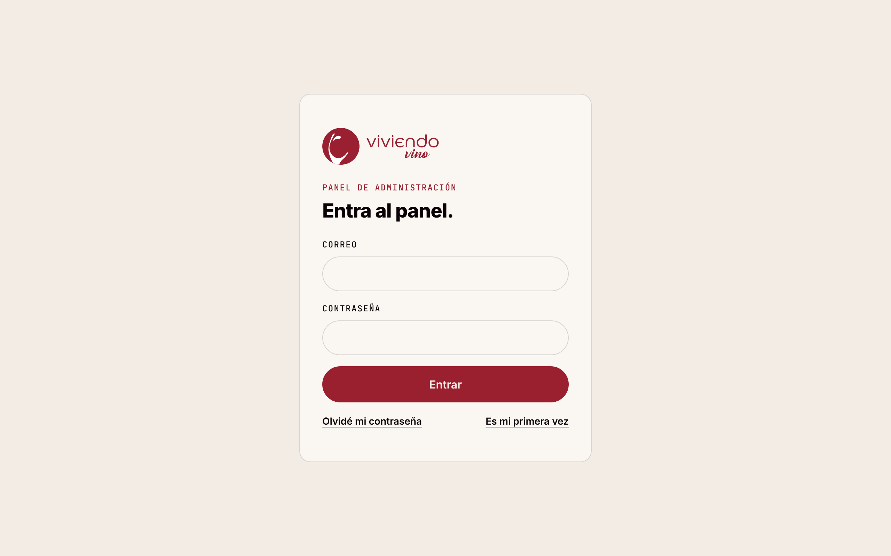
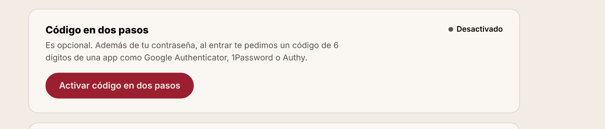
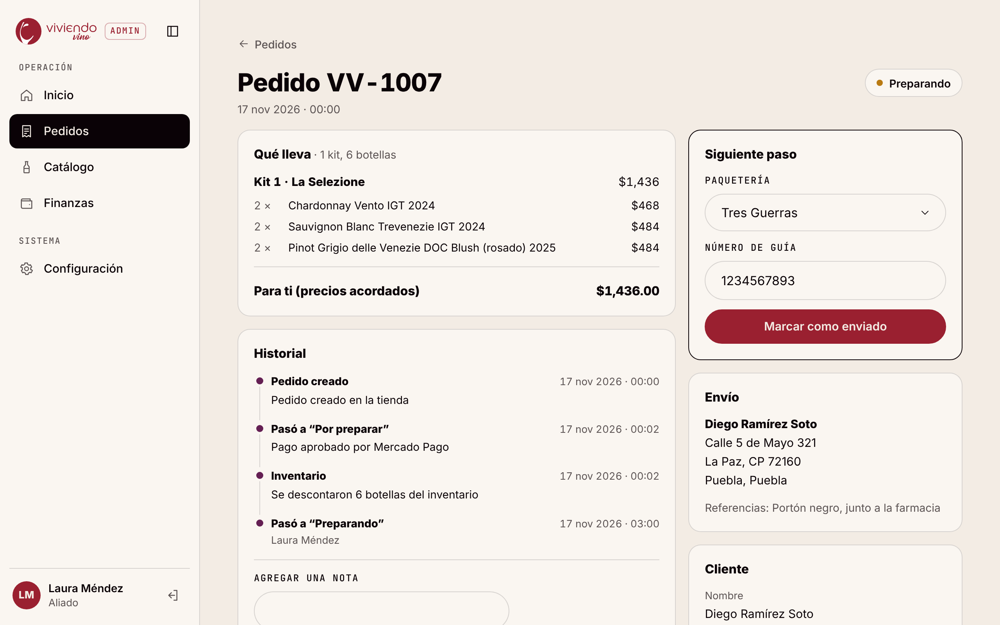
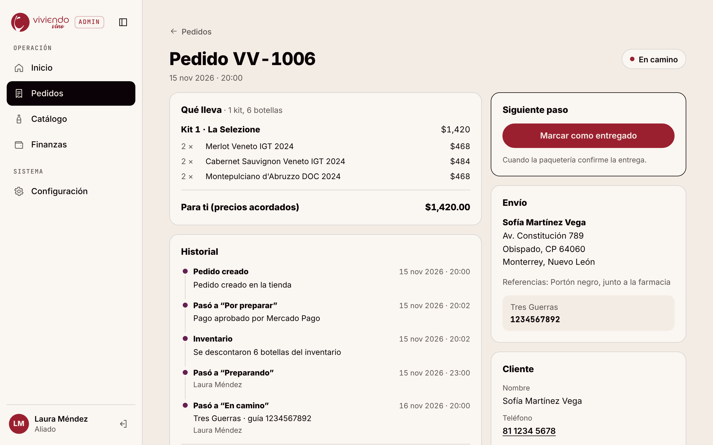
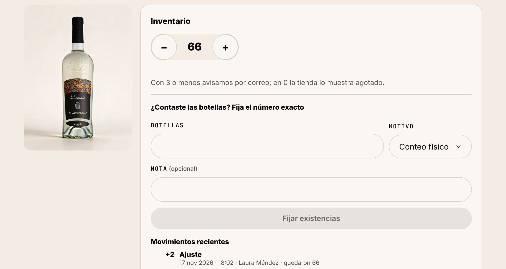

Guía visual, paso a paso, para preparar y enviar pedidos, llevar el inventario y consultar tus ventas.
www.viviendovino.com/admin
Noviembre 2026Uso internoCapturas con datos de ejemplo
Antes de empezar
Para quién es este manual.
Para cualquier persona del equipo del aliado que prepare y envíe pedidos de Viviendo Vino. No necesitas saber de sistemas: cada pantalla viene con números que explican qué hace cada botón.
En el panel tú
Ves tus pedidos y a quién enviarlos.
Los avanzas: preparar → enviar → entregado.
Llevas el inventario de tus vinos.
Consultas tus ventas y tu saldo.
Viviendo Vino se encarga de
Cobrar al cliente y atenderlo.
Precios, fotos y textos de los vinos.
Cancelaciones y devoluciones de dinero.
Dar acceso a más personas de tu equipo.
Contenido
01Entrar al panel
02La pantalla de inicio
03Tus pedidos
04El camino de un pedido
05Paso 1 · Preparar
06Paso 2 · Enviar
07Paso 3 · Entregado
08Desde el celular
09Tus vinos (inventario)
10Contar y fijar existencias
11Finanzas
12Ayuda y resumen
Las capturas usan datos de ejemplo. Los pedidos, clientes, montos y existencias que ves aquí son inventados; en tu panel verás los tuyos.
Viviendo Vino · Manual del aliado · Introducción2
01 · Entrar al panel
Entra con tu correo y tu contraseña.
La dirección es www.viviendovino.com/admin. Guárdala en favoritos.

12345
Pantalla de entrada al panel.
1
Correo: el mismo en el que recibiste la invitación.
2
Contraseña: la que creaste (mínimo 10 caracteres).
3
Entrar. Si activaste el código en dos pasos, después te pide los 6 dígitos de tu app.
4
Es mi primera vez: si el enlace de la invitación ya venció (dura 1 hora), aquí pides uno nuevo para crear tu contraseña.
5
Olvidé mi contraseña: te llega un correo para crear una nueva.
Viviendo Vino · Manual del aliado · Entrar3
01 · Entrar al panel
Protege tu cuenta (recomendado).
En Configuración → Mi cuenta puedes cambiar tu nombre y tu contraseña, y activar el código en dos pasos.

12
Configuración → Mi cuenta, sección del código en dos pasos.
1
Código en dos pasos: además de tu contraseña, al entrar te pedimos un código de 6 dígitos de una app en tu celular.
2
Activar: escanea el código QR con Google Authenticator, Microsoft Authenticator o similar, y escribe el código que te muestre.
Cada persona, su propia cuenta. No compartas tu contraseña. Si alguien más va a preparar pedidos, pídenos que lo invitemos con su correo.
¿Vas a cambiar de celular? Antes, desactiva el código en Mi cuenta y vuelve a activarlo en el nuevo. Si lo perdiste, escríbenos.
Tu primer día
Creé mi contraseña y entré al panel.
Activé el código en dos pasos.
Revisé en Catálogo que las existencias coincidan con mi almacén.
Guardé www.viviendovino.com/admin en favoritos.
Viviendo Vino · Manual del aliado · Mi cuenta4
02 · Inicio
Lo que necesita tu atención hoy.
Es lo primero que ves al entrar. Revísalo cada mañana.
123456
Inicio del panel.
1
Por preparar: pedidos pagados que aún no salen. Tu lista de trabajo del día.
2
Atrasados: pedidos que ya pasaron el plazo de preparación. Debe estar en 0.
3
En camino: enviados que aún no marcas como entregados.
4
Vinos agotados: vinos en 0 botellas; en la tienda nadie los puede comprar.
5
Pocas existencias: vinos con 3 botellas o menos.
6
Tus ventas: lo vendido hoy, en 7 días y en el mes, y lo que tienes por recibir.
Viviendo Vino · Manual del aliado · Inicio5
03 · Pedidos
Tus pedidos, en una lista.
Cuando un cliente paga, te llega un correo "Nuevo pedido por preparar" y el pedido aparece aquí.
1234
Pedidos: la lista completa.
1
Buscar: por número de pedido (folio), nombre del cliente o ciudad.
2
Filtros: ve solo los que están por preparar, en camino, entregados o cancelados.
3
Folio: da clic para abrir el pedido (por ejemplo, VV-1008).
4
Estado: en qué paso va cada pedido. La columna Para ti es lo que te toca de ese pedido.
Viviendo Vino · Manual del aliado · Pedidos6
04 · El camino de un pedido
Tres botones, en orden.
Cada pedido avanza con un solo botón en la caja "Siguiente paso". El cliente recibe un correo en cada paso importante.
Por preparar
Pago confirmado.
Empezar a preparar →
Preparando
Estás armando la caja.
Marcar como enviado →
En camino
El cliente recibe su guía.
Marcar como entregado →
Entregado
Cuenta para tu saldo.
Estado
Qué significa
Qué haces
Pago pendiente
El cliente está pagando; las botellas quedan apartadas unos minutos.
Nada todavía.
Por preparar
Mercado Pago confirmó el pago.
Empezar a preparar (página 05).
Preparando
La caja está en tus manos.
Al darla a la paquetería: Marcar como enviado (página 06).
En camino
El cliente recibió un correo con la paquetería y la guía.
Cuando llegue: Marcar como entregado (página 07).
Entregado
El cliente recibió un correo de entrega.
Nada más.
Cancelado
Lo canceló Viviendo Vino antes del envío.
No lo envíes. Las botellas regresan solas a tu inventario.
Venció sin pago
El pago nunca llegó.
Nada: no es una venta.
Tiempos que prometemos al cliente: preparar en 1 a 2 días hábiles y entregar en hasta 7 días hábiles desde la compra.
Viviendo Vino · Manual del aliado · Ciclo del pedido7
05 · Paso 1
Preparar el pedido.
Abre el pedido desde la lista. Todo lo que necesitas para armar la caja está en esta pantalla.
123456
Detalle de un pedido por preparar (2 kits).
1
Qué lleva: cada kit son 6 botellas; aquí ves qué vinos y cuántos de cada uno.
2
Para ti: lo que te toca de este pedido, a tus precios acordados.
3
Empezar a preparar: dale clic al empezar a armar la caja; así sabemos que ya está en tus manos.
4
Envío: nombre, dirección y referencias para la guía de la paquetería.
5
Cliente: nombre y teléfono para la paquetería.
6
Agregar una nota: deja aquí cualquier detalle (por ejemplo, dirección incompleta) y avísanos.
"Lleva descorchador": algunos pedidos de la apertura muestran esta etiqueta. Incluye el descorchador Viviendo Vino en la caja.
Viviendo Vino · Manual del aliado · Preparar8
06 · Paso 2
Enviar: captura la paquetería y la guía.
Cuando entregues la caja a la paquetería, registra el envío. El cliente recibe un correo con su número de guía para rastrearlo.

123
Pedido en preparación, con la paquetería y la guía capturadas.
1
Paquetería: elige la que usaste (por ejemplo, Tres Guerras).
2
Número de guía: escríbelo exactamente como viene en el comprobante.
3
Marcar como enviado: el pedido pasa a "En camino" y el cliente recibe su guía por correo.
Antes de cerrar la caja
Vinos, añadas y cantidades iguales al pedido.
Cápsulas, sellos y etiquetas intactos.
Empaque firme para 6 botellas, sin movimiento.
Descorchador incluido, si el pedido lo indica.
La guía lleva nombre, teléfono y dirección completos.
Revisa dos veces el número de guía antes de guardarlo.
Viviendo Vino · Manual del aliado · Enviar9
07 · Paso 3
Entregado: cierra el pedido.
Cuando la paquetería confirme la entrega, márcalo. Desde ese momento el pedido cuenta para tu saldo.

12
Pedido en camino.
1
Marcar como entregado: el cliente recibe un correo de entrega y el pedido entra a tu saldo.
2
Historial: queda registrada la paquetería y la guía, quién hizo cada paso y cuándo.
Situaciones especiales
Te falta una botella
No la cambies por otro vino. Escríbenos antes de enviar.
Dirección incompleta
Deja una nota en el pedido y avísanos; contactamos al cliente.
Solo mayores de edad
La paquetería puede pedir identificación y no entregar a menores de 18 años.
El cliente reporta daños
Nos escribe a nosotros; coordinamos contigo la reposición o devolución.
Te escribe un cliente
Canalízalo con Viviendo Vino: somos su único punto de contacto.
Viviendo Vino · Manual del aliado · Entregado10
08 · Desde el celular
El panel también funciona en el celular.
El mismo pedido, en un iPhone.
Útil en el almacén: abre el pedido, arma la caja y marca cada paso sin ir a la computadora.
El menú está en el botón ☰ de arriba a la derecha.
La caja "Siguiente paso" aparece primero, con el botón del paso que toca.
Abajo están el detalle de los kits, la dirección y el historial.
Toca el teléfono del cliente para llamarle si la paquetería lo pide.
Consejo: en el celular, abre www.viviendovino.com/admin y agrégalo a tu pantalla de inicio (en Safari: Compartir → "Agregar a pantalla de inicio").
Viviendo Vino · Manual del aliado · Celular11
09 · Inventario
Tus vinos y sus existencias.
En Catálogo ves cuántas botellas tienes de cada vino. Cuando un vino llega a 0, la tienda lo muestra agotado.
12345
Catálogo: tus vinos.
1
Buscar: por nombre del vino o del productor.
2
Filtros: ve rápido cuáles tienen pocas botellas o están agotados.
3
− y +: quitan o suman una botella por clic y se guardan solos. Úsalos para ajustes pequeños.
4
Pocas / Agotado: aviso cuando un vino tiene 3 o menos, o 0.
5
Ver: abre la ficha del vino para fijar el número exacto y ver sus movimientos (página 10).
Viviendo Vino · Manual del aliado · Inventario12
10 · Inventario
¿Contaste el almacén? Fija el número exacto.
En la ficha de cada vino (botón Ver) puedes escribir cuántas botellas tienes de verdad.

123
Ficha del vino: inventario.
1
− y +: igual que en la lista.
2
Fijar existencias: escribe las botellas que contaste, elige el motivo (conteo físico, merma…) y da Fijar existencias.
3
Movimientos recientes: cada cambio, quién lo hizo y cuántas quedaron.
Lo que el sistema hace solo
Al pagarse un pedido, descuenta sus botellas. No las restes a mano.
Mientras un cliente paga, aparta las botellas unos minutos; si no paga, regresan.
Si Viviendo Vino cancela un pedido, sus botellas regresan solas.
Te avisa por correo cuando un vino baja a 3 botellas o menos y cuando llega a 0.
Regla de oro: si vendes estos vinos por otros canales, actualiza el inventario el mismo día.
Viviendo Vino · Manual del aliado · Fijar existencias13
11 · Finanzas
Tus ventas y tu saldo.
Solo de consulta. Todo está calculado con tus precios acordados.
123456
Finanzas.
1
Tus ventas: lo que te toca de todos tus pedidos pagados.
2
Entregado: lo de pedidos ya entregados, es decir, lo que ya se te debe.
3
Transferido: lo que Viviendo Vino ya te pagó.
4
Por recibir: entregado menos transferido. Lo que va en camino se suma al entregarse.
5
Transferencias recibidas: cada pago, con fecha y referencia.
6
Ventas por pedido: el detalle por folio, con su estado.
Recibes tu precio acordado íntegro: la comisión de Mercado Pago y los descuentos de campañas salen del margen de Viviendo Vino.
Viviendo Vino · Manual del aliado · Finanzas14
12 · Ayuda
Estamos para ayudarte.
Ten a la mano el folio del pedido (VV-…).
Correo
hola@viviendovino.com
Teléfono y WhatsApp
229 132 5000
Horario
Lunes a viernes 9:00 a 18:00 (CDMX)
Resumen en una hoja
Entrar
www.viviendovino.com/admin · correo, contraseña y código de tu app
Llega un pedido
Correo "Nuevo pedido por preparar" → abre el pedido → Empezar a preparar
Sale a ruta
Paquetería + número de guía → Marcar como enviado
Llegó
Marcar como entregado (entra a tu saldo)
Cambió tu almacén
Catálogo → − / + o Ver → Fijar existencias
Algo raro
Nota en el pedido y avísanos. Nunca cambies un vino por otro sin hablarlo.
Seguridad. Viviendo Vino nunca te pedirá tu contraseña ni tu código por teléfono, correo o WhatsApp.
El abuso en el consumo de este producto es nocivo para la salud. Venta exclusiva a mayores de 18 años.
 123456
123456 1234
1234 123456
123456
 12345
12345 123456
123456